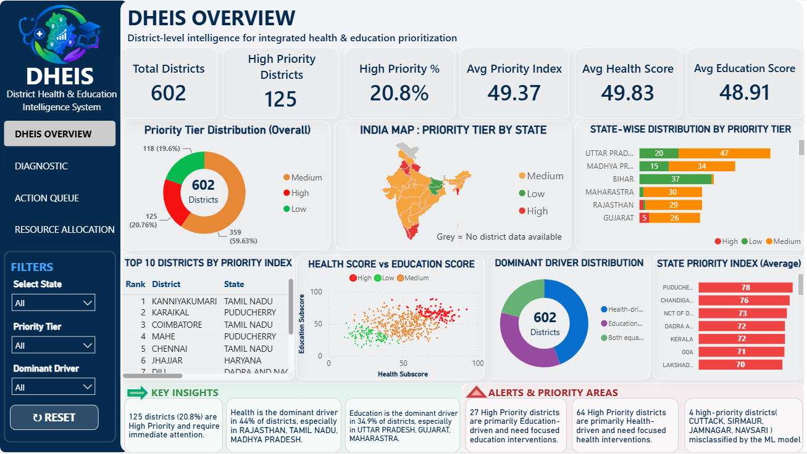
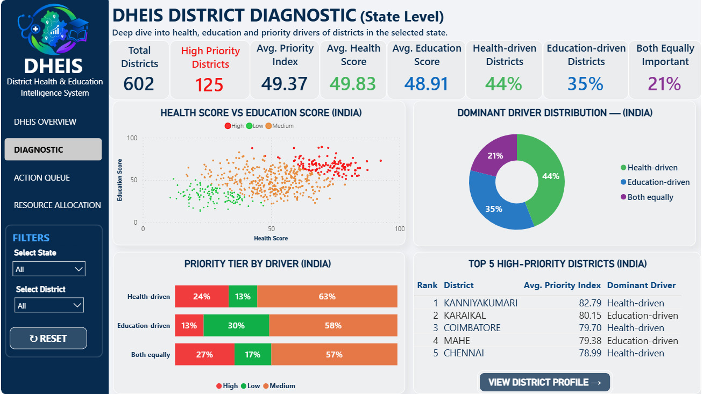
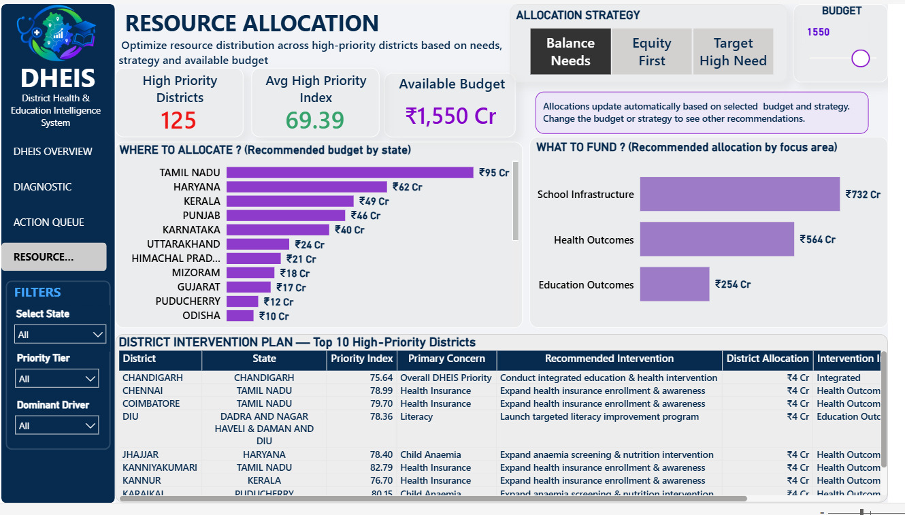
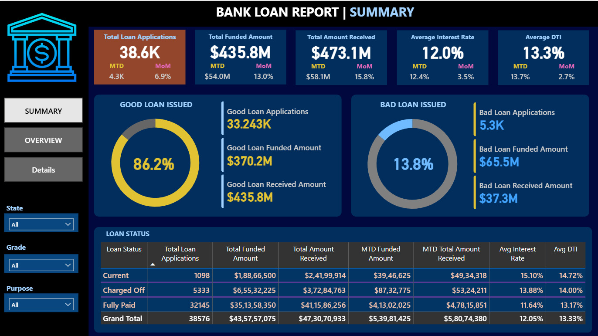
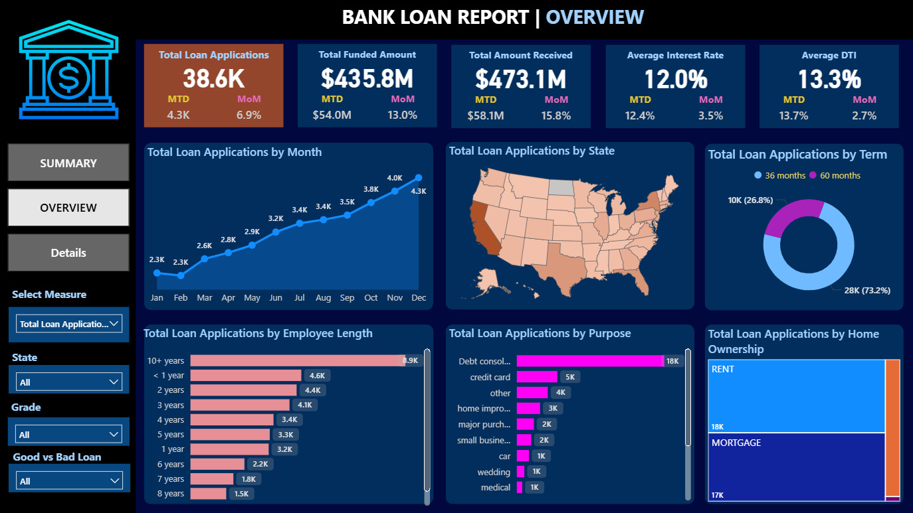
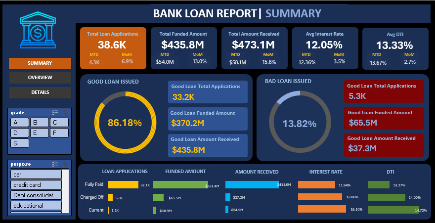

I turn messy data into clear answers. I recently finished my B.Tech in Computer Science, and I have built analytics projects from raw data to dashboards, led a team of 10 interns, and I am looking for an entry-level data analyst role.
I enjoy the part of analytics where a pile of rough numbers starts to make sense. I like cleaning data, finding the pattern, and then explaining it in a way that someone can act on.
I graduated in 2026 with a B.Tech in Computer Science Engineering from Guru Nanak Dev University, Amritsar. Alongside my degree I completed two internships, in data analytics and business analytics, and built two projects end to end.
At Uptoskills I was promoted from intern to Team Lead, where I reviewed my team's Excel and Power BI work and helped unblock them. I care about being accurate and about being clear when I explain things.
8.56 / 10CGPA, B.Tech CSE
2 internshipsData analytics and business analytics
10 internsLed as Team Lead at Uptoskills
Projects
DHEIS: District Health & Education Intelligence System
An analytics platform that ranks districts by need, built independently during my internship at SURE Trust.
602districts
95%accuracy
96%recall
8dashboard pages
Combined NFHS-5 health data and DISE education data into one dataset covering 602 districts, using PostgreSQL, Excel and Python on Databricks.
Designed a percentile-normalized Priority Index and trained a Logistic Regression classifier. Recall rose from 88% to 96% after I added data-quality validation.
Delivered an 8-page Power BI dashboard and a deployed Streamlit app. The app includes a district briefing feature that uses the Groq API and is limited to the evidence in the data.
Trained in Excel, SQL, Python, Machine Learning, Power BI and Databricks, and applied them to data cleaning, EDA, dashboards and predictive modeling.
Built DHEIS on my own and finished the internship with a 10/10 GPA and a completion certificate.
Business Analytics Intern, then Team Lead, Uptoskills
Feb 2026 to May 2026
Did lead generation and verification, and built a Power BI dashboard on my own to analyse and visualise the collected lead data.
Promoted to Team Lead. I oversaw 10 interns, reviewed their Excel and Power BI work for accuracy, resolved blockers, and coordinated tasks and reporting.
Certificates
Learning and activities
Deloitte Data Analytics Job SimulationCompleted through Forage, Jan 2026.
Volunteer, SURE TrustHelping with internship completion certificates and student certification, 2026 to present.
Life Skill Training and PAWRCompleted 15 Professional Awareness and Workplace Readiness sessions on communication, teamwork, ethics and accountability.
GROW, Tech Startup-ConnectTook part in this women entrepreneurship program at GNDU, 2023.
Contact
Have a data problem worth solving?
Open to entry-level Data Analyst opportunities and analytics-focused work.
DHEIS: District Health & Education Intelligence System
A system that combines India's health and education survey data to show which districts need attention first, and why.
Python
SQL
Databricks
MLflow
Power BI
Streamlit
602districts
14indicators
95%accuracy
96%High-tier recall
The problem
Health and education departments usually review districts separately, with different reports and cycles. A district that struggles on both fronts is not picked out as its own group, even though it may need help most. I wanted one view that answers three questions: where are the priority districts, why, and what should be funded.
The data
Health data came from NFHS-5 (2019 to 21) and education data from DISE (2015 to 16). After matching, 602 districts were left. 78 of the 680 districts in the education file were excluded because the two surveys divide some regions differently. The survey years also differ, and I kept that limitation visible.
What I did
Matched district and state names between the two surveys with state-aware fuzzy matching, and checked every unclear match by hand against real district lists.
Found that the original pupil-teacher field did not behave like a ratio. I recalculated it from total enrollment and total teachers.
Scaled 14 indicators (8 health, 6 education) to a 0 to 100 vulnerability scale using percentile ranks. My first version used min-max scaling, which introduced a bias between the health and education sides.
Averaged the health and education sub-scores into the Priority Index, then split districts into High (top 20%), Medium and Low (bottom 20%).
Built the pipeline on Databricks with Python in Bronze, Silver and Gold layers, with PostgreSQL on Supabase underneath.
Trained a Logistic Regression model on stratified 5-fold cross-validation and tested it once on 20% of districts held back. I left the index and sub-scores out of its inputs to avoid data leakage, and tracked experiments in MLflow.

The overall Power BI dashboard: priority distribution and key indicators
What I found
The tiers came out at 125 High, 359 Medium and 118 Low priority districts.
On the held-out districts the model reached 95% accuracy and 96% recall on the High tier. A model that always guessed the most common tier scored 59.5% accuracy and 0% High-tier recall.
Recall improved from 88% to 96% after data-quality validation.
Across districts, health was the dominant driver in 62% and education in 38%.
A check across gender-literacy-gap and SC/ST-population groups found no material accuracy gap. Those columns were used only for the check, never as model inputs.

District-level view with the Priority Index, tier and supporting indicators
From priority to action: Action Queue and Resource Allocation
A ranked list shows where the problems are, but not what to do next. I built two Power BI pages that turn a district's priority into a possible next step.
Action Queue
Which districts to look at first
Lists the high-priority districts in rank order, with their top indicator gaps and a recommended action for each.
Choosing a district opens its action summary: Priority Index, Primary Concern (the biggest gap against the state benchmark), recommended action and other key gaps.
Summary cards count the 125 High-priority districts across 23 states and UTs, and show how many are Critical.
A "Why districts are flagged" panel explains the reasons in plain words, so users can trust the list.
Resource Allocation
Where support could go
The user sets a budget and picks a strategy: Target High Need, Balance Needs or Equity First. Every chart updates.
Where to allocate shows the recommended budget by state.
What to fund splits it across school infrastructure, health outcomes and education outcomes.
A District Intervention Plan lists the top 10 high-priority districts with their main concern, a recommended intervention and a suggested allocation.
Action Queue page: ranked districts, recommended actions and a district action summary

Resource Allocation page: budget and strategy controls, where to allocate, what to fund, and the district intervention plan
These pages are planning aids. The amounts change with whatever budget and strategy the user picks, and they do not decide real funding. People still make the decision.
What people can use
An 8-page Power BI dashboard and a deployed Streamlit app. The app lets you filter and compare districts, and it includes an AI-written district brief using the Groq API, limited to the evidence in the data so it cannot invent statistics or causes.
What I learned
Check what a field means, not just its format. The pupil-teacher field looked fine until I looked at how its values behaved. I also learned how easily a model can look good through data leakage, and why AI output needs limits in a decision tool. DHEIS supports a decision. It does not allocate funding or replace human judgement.
My final-year B.Tech project: a pipeline from a raw Excel loan file to SQL, Python, Excel and Power BI, for tracking how a loan portfolio performs.
PostgreSQL
SQL
Python
Power BI
DAX
Excel
38,576loan records
25attributes
$28.2Mcredit loss
56.9%recovery on bad loans
The problem
A lender needs to see how many loans are performing, how many are going bad, and how that changes month to month. I set out to turn one raw loan file into KPIs and dashboards that answer those questions.
The data
38,576 loan records with 25 columns. It was fairly clean: no duplicates and no negative values. The employer title column had 1,438 blanks (3.73%), which I filled with "Not Specified". I trimmed stray spaces in the loan term, and added a Good vs Bad Loan column, where "Charged Off" counts as bad.
What I did
Stored the data in PostgreSQL and wrote 25+ SQL queries for overall, month-to-date and previous-month KPIs, a loan status grid, and breakdowns by month, state, term, employment length, purpose and home ownership.
Ran exploratory analysis in Python with Pandas, Matplotlib, Seaborn and Plotly, producing 8 charts.
Built 2 Excel dashboards with pivot tables and slicers.
Built 3 Power BI dashboards with DAX measures for month-to-date, month-over-month and good vs bad loan percentages.

Power BI summary page: KPIs, good vs bad loans and loan status table
What I found
$435.76M was funded and $473.07M received. Average interest rate was 12.05%.
86.18% of loans were good (33,243) and 13.82% were bad (5,333).
Bad loans were funded with $65.53M but only $37.28M came back. That is a recovery rate of 56.9% and a credit loss of about $28.2M. Good loans returned 117.7% of what was funded.
Applications grew 87% from January (2,301) to December (4,314). In December, applications rose 6.9% and funding 13.0% on November.
California had the most applications (6,894). Debt consolidation was the top purpose at 47.2%, and 73.2% of borrowers chose 36-month terms.

Power BI overview page: monthly trend, state map, term, purpose and home ownership

Excel overview dashboard built with pivot tables and slicers
What I learned and what is next
I learned to turn business questions into SQL and DAX measures that give the same answer in every tool, and to explain a number like recovery rate clearly. The project does not predict defaults. Adding a model for that is the next step I would take.